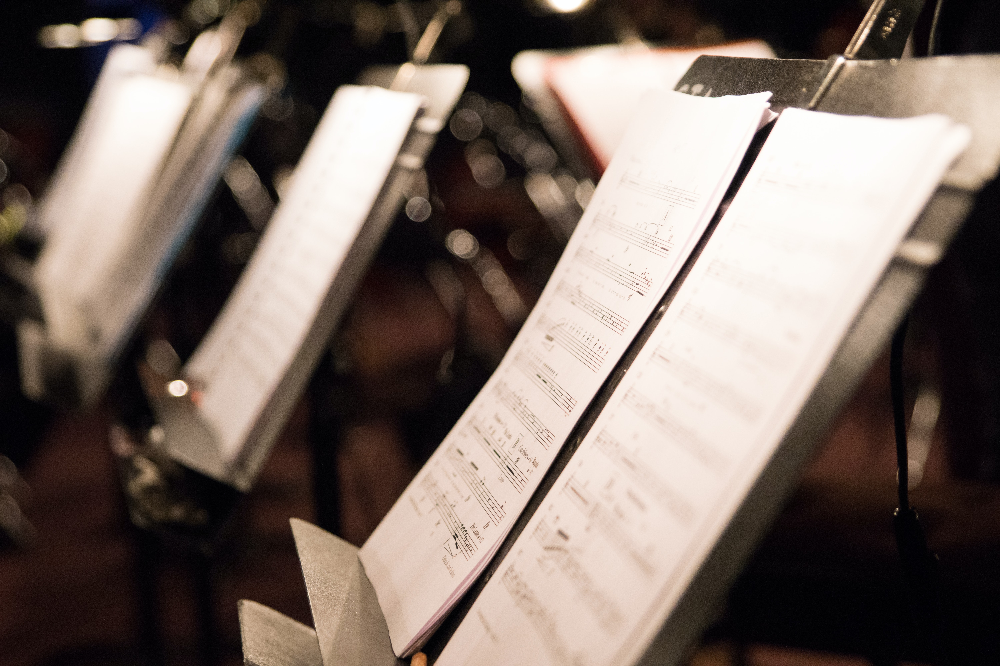
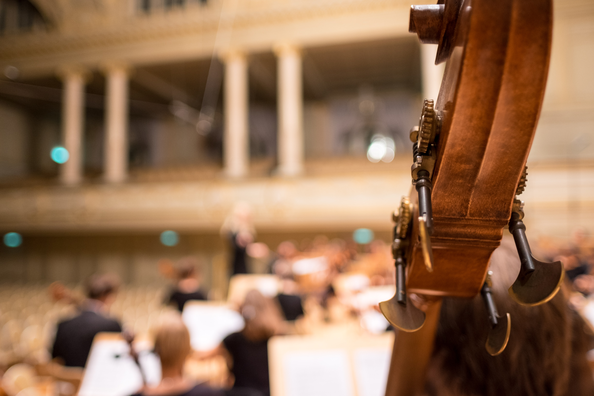
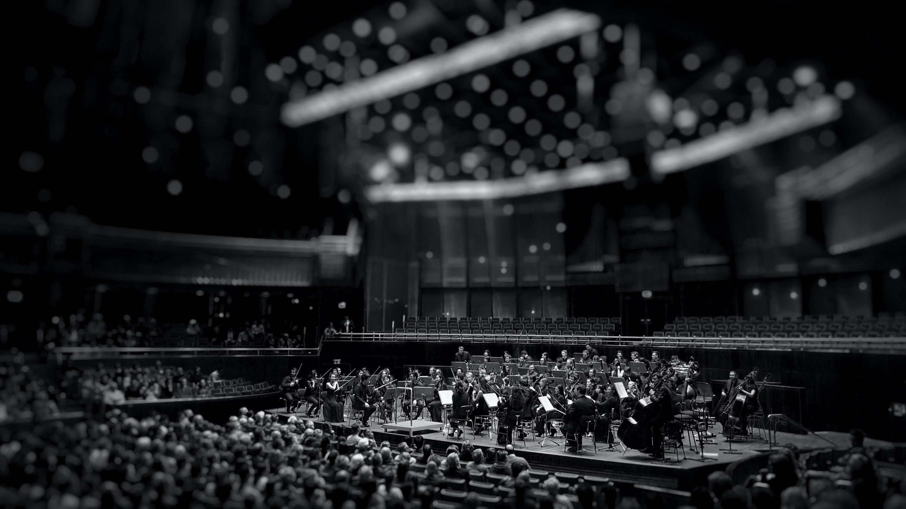

classical
Though the term "classical music" includes all Western art music from the Medieval era to the 2000s,
the Classical Era was the period of Western art music from the 1750s to the early 1820s—the era of
Wolfgang Amadeus Mozart, Joseph Haydn, and Ludwig van Beethoven.




Motherland of CLASSICAL - Germany